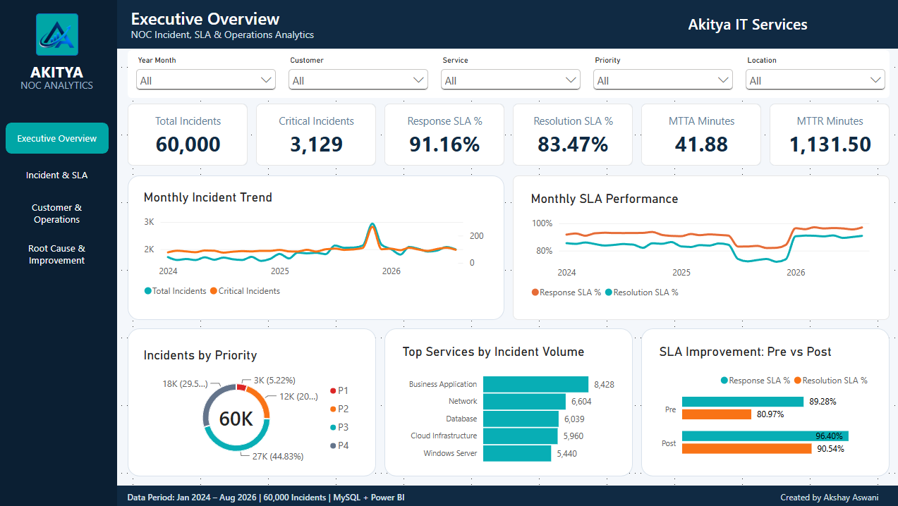

Operations Foundation
24×7 Monitoring · Incident Management · SLA · RCA · Log Analysis · Operational Reporting
I'm Akshay Aswani, a NOC Engineer with 3+ years of professional IT experience, building my career in Data Analytics and Business Intelligence through SQL, Power BI, Excel, and Python.
I bring hands-on experience in production monitoring, incident management, troubleshooting, root cause analysis, and SLA-driven operations into Data Analytics. This operational background helps me approach data with a strong understanding of business processes, performance metrics, and problem-solving.
24×7 Monitoring · Incident Management · SLA · RCA · Log Analysis · Operational Reporting
SQL Server · MySQL · Power BI · DAX · Power Query · Excel · Python · Pandas
KPI Development · Data Modeling · Data Validation · Dashboard Design · Business Insights
Detailed professional experience showing the analytical, troubleshooting, data, and operations foundation behind my move into analytics.
eClinicalWorks
Crest Data System
Futurense Technologies
Projects are separated by completion status so recruiters can immediately see what is portfolio-ready and what is currently being developed.
MYSQL · POWER BI · OPERATIONS ANALYTICS

End-to-end analysis of 60,000 synthetic NOC incidents covering SLA performance, service reliability, customer risk, shift operations, root causes and measurable improvement-program outcomes.
ADVANCED EXCEL · BANKING
10,000-record loan portfolio solution covering risk analysis, forecasting, scenario modeling, EMI calculations and borrower-level decision support.
POWER BI · SQL · BANKING
Interactive portfolio analysis of loan applications, funded amounts, repayments, borrower segments, portfolio quality and geographic trends.
MYSQL · POWER BI · TRANSPORTATION
150K ride-booking records analyzed for booking performance, revenue, cancellations, customers, ride distance and driver ratings.
SQL SERVER · POWER BI · RETAIL
Enterprise-style database and BI solution spanning sales, inventory, returns, refunds, executive KPIs, data quality validation and multi-page reporting.
Awarded the Rising Star recognition for strong performance, dedication, ownership and contribution to the team and organization.
View LinkedIn post